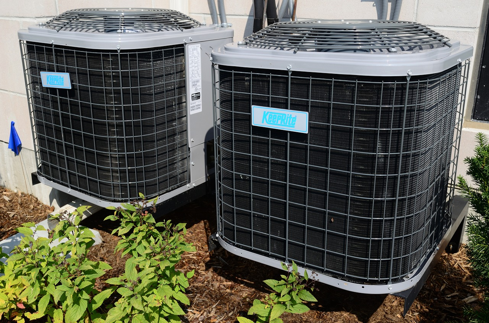
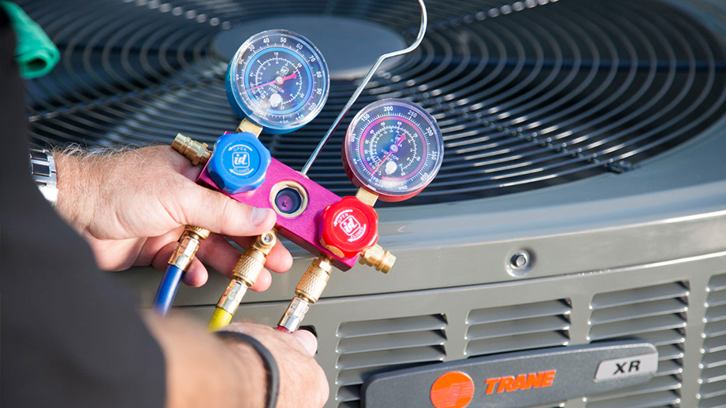

01 · Heating
Residential heating
Furnace and heat-pump repair, planned maintenance and replacement guidance for Michigan winters.
Explore heating serviceLocal HVAC expertise · Macomb County, Michigan
Call Frost & Kretsch for residential or commercial HVAC repair, maintenance and installation throughout Macomb County, Michigan.
24/7 HVAC Response
Residential Heating & Cooling
Commercial HVAC Service
Licensed & Insured Local Team
Residential & Commercial HVAC Services
Get help with furnace repair, air-conditioning service, heat-pump concerns, preventive maintenance and commercial HVAC needs throughout Macomb County.
Furnace and heat-pump repair, planned maintenance and replacement guidance for Michigan winters.
Explore heating serviceAC diagnostics, repair, seasonal service and system installation for dependable summer comfort.
Explore cooling service

Seasonal inspection and maintenance designed to surface problems before comfort is interrupted.
Call about maintenanceA useful answer, right away
A qualified HVAC team diagnoses comfort and airflow problems, repairs or maintains existing equipment, and helps property owners compare replacement options when a system is no longer dependable.
Call and describe what your system is doingNo heat, weak airflow, short cycling, unusual sounds and uneven rooms all need evidence—not guesswork.
Repair, maintenance and replacement are different decisions. The right recommendation depends on condition, safety and system fit.
The goal is stable heating or cooling, proper airflow and a system that makes sense for the property.
Residential & Commercial
Macomb County HVAC service
Frost & Kretsch provides residential and commercial HVAC repair, maintenance and installation throughout Macomb County. From furnace problems and weak airflow to air-conditioning failures, heat-pump concerns and planned system replacement, the goal is dependable comfort supported by clear diagnosis and practical service options.
Help for no heat, short cycling, uneven temperatures, unusual sounds and weak airflow during Michigan winters.
AC diagnostics, repair, seasonal maintenance and replacement planning for Macomb County homes and commercial properties.
Evidence-based guidance when a system needs maintenance, repair or a replacement comparison—not generic one-size-fits-all advice.
Macomb County service area
Frost & Kretsch provides residential and commercial heating and cooling service across Macomb County, from the lakeshore and established southern communities to growing northern townships.
Frost & Kretsch knowledge center
Browse practical heating, cooling, heat-pump and indoor-air guidance already published for Michigan homeowners and property managers.
Compare system condition, performance and repair evidence before making a major equipment decision.
Read the articleLearn which longer run cycles can be normal and which patterns may justify a service call.
Read the articlePractical ways to think about ventilation, comfort and indoor air during a busy Michigan winter.
Read the articleA practical pre-closure checklist for facilities, property managers and commercial building teams.
Read the articleUnderstand why repeated resets can hide an electrical or equipment problem that needs diagnosis.
Read the articleReview safe observations to make after a filter change without forcing equipment or creating another problem.
Read the articleHVAC service questions
Find quick answers about emergency availability, supported heating and cooling systems, Macomb County coverage, and repair-versus-replacement decisions.
Frost & Kretsch advertises 24-hour, seven-day HVAC availability. Call (586) 929-8980 to confirm current response timing and speak with the team.
The company provides heating and air-conditioning repair, maintenance and installation for residential and commercial properties, including furnace and heat-pump services.
Frost & Kretsch serves homes and businesses throughout Macomb County, including Chesterfield, New Baltimore, Macomb Township, Clinton Township, Mount Clemens, Sterling Heights, Warren, St. Clair Shores, Shelby Township and Washington Township.
The decision depends on the failed component, safety, repair history, system age, energy use and how well the equipment fits the property. A diagnosis should come before a replacement recommendation.
Ready when your system is not
Whether the issue is urgent or planned, the main next step is the same: call Frost & Kretsch and speak with the team.